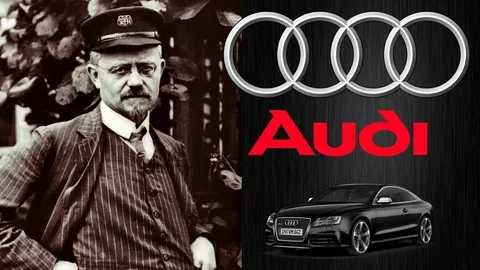
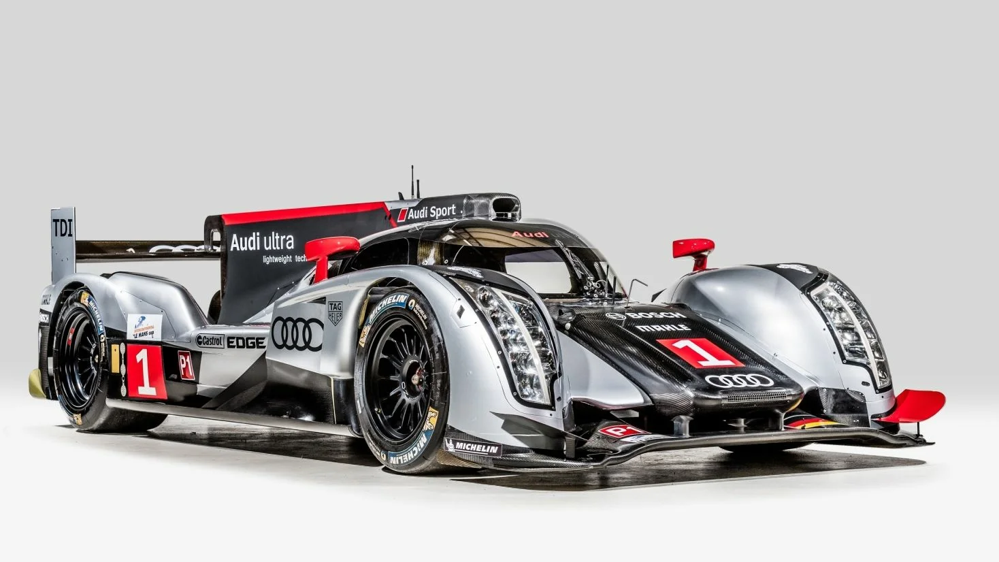

Мое увлечение автомобилями Audi
Автомобили Audi всегда привлекали меня своим сочетанием инновационных технологий, элегантного дизайна и выдающейся производительности. Для меня Audi — это не просто автомобили, это символ инженерного мастерства и стиля.
История марки Audi
Audi — это немецкий автопроизводитель, основанный в 1909 году Августом Хорьхом. Название "Audi" происходит от латинского перевода фамилии Хорьха ("Horch" означает "слушать", а "Audi" — "слушай"). С тех пор марка стала символом инноваций и качества.
Одним из ключевых моментов в истории Audi стало внедрение полного привода Quattro в 1980-х годах, который revolutionized автоспорт и стал визитной карточкой бренда.
Мои любимые модели Audi
- Audi R8: Спортивный автомобиль с двигателем V10, который сочетает в себе мощность и элегантность. Это настоящий суперкар, который впечатляет своей динамикой и дизайном.
- Audi RS6 Avant: Универсал с характером спортивного автомобиля. Мощный двигатель V8 и полный привод Quattro делают его идеальным для тех, кто ценит скорость и практичность.
- Audi A4: Компактный седан, который предлагает идеальный баланс между комфортом, технологиями и производительностью. Это отличный выбор для повседневной езды.
Вот несколько моделей Audi, которые я особенно ценю:
Технологии Audi
Audi всегда славилась своими инновационными технологиями. Вот несколько ключевых технологий, которые делают автомобили Audi уникальными:
- Quattro: Полный привод, который обеспечивает превосходное сцепление с дорогой в любых условиях.
- Virtual Cockpit: Цифровая приборная панель, которая позволяет водителю настраивать отображение информации по своему вкусу.
- MMI (Multi Media Interface): Интуитивно понятная система управления мультимедиа и навигацией.
- Driver Assistance Systems: Системы помощи водителю, такие как адаптивный круиз-контроль, помощь при парковке и система предотвращения столкновений.
Мероприятия и автоспорт
Audi активно участвует в автоспорте, включая гонки на выносливость, такие как 24 часа Ле-Мана. Команда Audi Sport неоднократно побеждала в этих соревнованиях, демонстрируя превосходство своих технологий.
Кроме того, Audi регулярно проводит мероприятия для своих поклонников, такие как тест-драйвы новых моделей и выставки, где можно увидеть концепт-кары и новинки бренда.
Полезные ресурсы
Если вы хотите узнать больше об автомобилях Audi, вот несколько полезных ресурсов:
- Официальный сайт Audi — здесь вы найдёте информацию о новых моделях, технологиях и событиях.
- Официальный YouTube канал Audi — видео с новинками, тест-драйвами и автоспортом.
- Audi Club Russia — сообщество поклонников Audi в России.